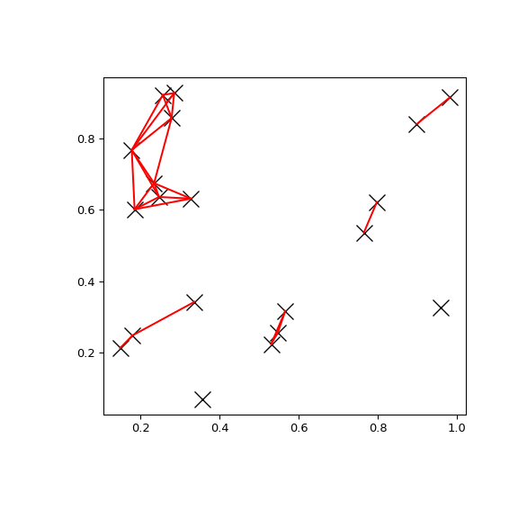

scipy.spatial.cKDTree.query_pairs¶
-
cKDTree.query_pairs(self, r, p=2.0, eps=0)¶ Find all pairs of points in self whose distance is at most r.
- Parameters
- rpositive float
The maximum distance.
- pfloat, optional
Which Minkowski norm to use.
phas to meet the condition1 <= p <= infinity. A finite large p may cause a ValueError if overflow can occur.- epsfloat, optional
Approximate search. Branches of the tree are not explored if their nearest points are further than
r/(1+eps), and branches are added in bulk if their furthest points are nearer thanr * (1+eps). eps has to be non-negative.- output_typestring, optional
Choose the output container, ‘set’ or ‘ndarray’. Default: ‘set’
- Returns
- resultsset or ndarray
Set of pairs
(i,j), withi < j, for which the corresponding positions are close. If output_type is ‘ndarray’, an ndarry is returned instead of a set.
Examples
You can search all pairs of points in a kd-tree within a distance:
>>> import matplotlib.pyplot as plt >>> import numpy as np >>> from scipy.spatial import cKDTree >>> np.random.seed(21701) >>> points = np.random.random((20, 2)) >>> plt.figure(figsize=(6, 6)) >>> plt.plot(points[:, 0], points[:, 1], "xk", markersize=14) >>> kd_tree = cKDTree(points) >>> pairs = kd_tree.query_pairs(r=0.2) >>> for (i, j) in pairs: ... plt.plot([points[i, 0], points[j, 0]], ... [points[i, 1], points[j, 1]], "-r") >>> plt.show()
